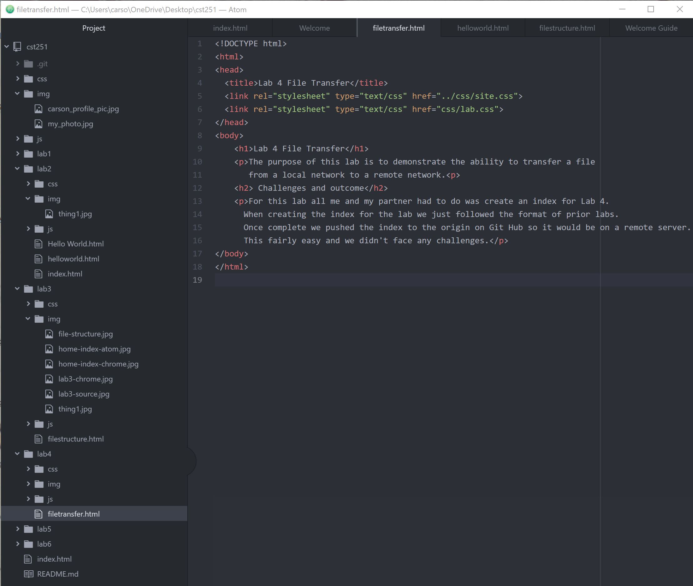

The purpose of this lab is to demonstrate the ability to transfer a file from a local network to a remote network.
For this lab all me and my partner had to do was create an index for Lab 4. When creating the index for the lab we just followed the format of prior labs. Once complete we pushed the index to the origin on Git Hub so it would be on a remote server. This fairly easy and we didn't face any challenges.
